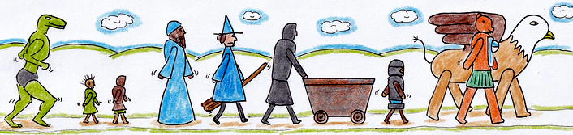

Mudwings and
The Rightful Bear

One bear's quest to regain her kingdom and save the world.
Main Contents
Foreword by Robert Carde
It is my great pleasure, gentle reader, to write the foreword to this esteemed collection of cartoons by illustrator unknown. We feel that perusing said cartoons will engender light and fanciful feelings in the reader, such as are most delightful in the evenings. In particular I praise their jocularity and use of pun.
I have been asked if the cartoons are based on real events. I tell you they are a fantasy upon a fantasy, and any resemblance between TRB and someone who once had a corner office is purely circumstantial. Likewise, while the Dragon King is a very real creature, the notion that he likes a song and dance with a goblin chorus may be seen as an attempt to manage our fear of him through humour.
I do hope you enjoy these cartoons as much as I have. If you do, please remember that MonOTom now carries the full range of MaTRB gifts, including the action figures, cuddly toys, and both battle and evening dress outfits for TRB.
Happy reading!
Robert Carde
1373 A.F.
Robert Carde, a devotee of Tomath, is a noted scholar based in the Imperial Library. He has been known to set off on adventures with a dubious bunch of elves. His recently published tome, "Giants are Very Big", has been well received and is available from MonOTom Publishing.